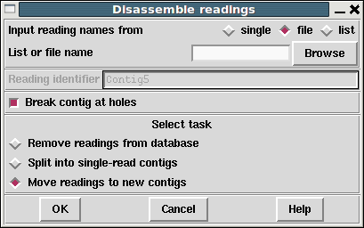

This function is used to remove readings from a database or move readings to new contigs.

If readings are removed from the database all reference to them is deleted. If a reading is moved to a "single-read contig" a new contig will be created containing this one single reading, which may then be re-processed by Find Internal Joins (see section Find Internal Joins) and the Join editor (see section The Join Editor), which should reveal all the other positions at which the reading matches.
More useful is the general "Move readings to new contigs". This will keep any assembly relationships intact between the set of readings to be disassembled. For example if three readings overlap then when disassembled all three will end up in a single new contig. This function is particularly useful for pulling apart false joins or repeats.
The set of readings to be processed can be read from a "file" or a "list" and clicking on the "browse" button will invoke an appropriate browser. If just a single reading is to be assembled choose "single" and enter the reading name instead of the file or list of filenames.
Removal via a "list" is a particularly powerful option when controlled via the list generation functions within the contig editor. For example break contig could be viewed as disassembling a list of readings selected using "Select this reading and all to right".
Unlike gap4, gap5 can cope with having holes in contigs. (This is obviously a requirement when dealing with mapped alignments.) Hence gap5 gives us a choice whether to break contigs into two (or more) pieces when removing sequences produces holes in the contigs. By default this is enabled.